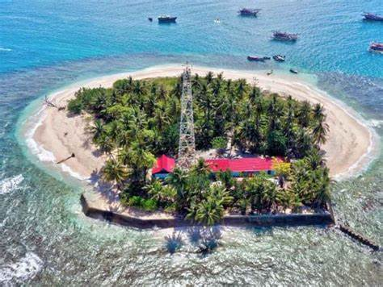
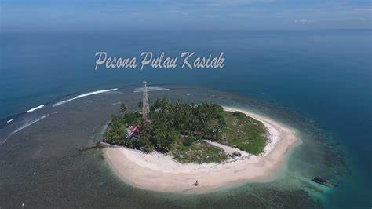
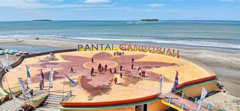
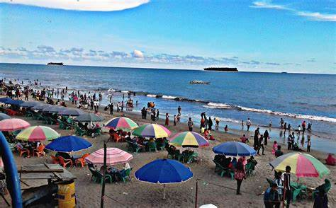
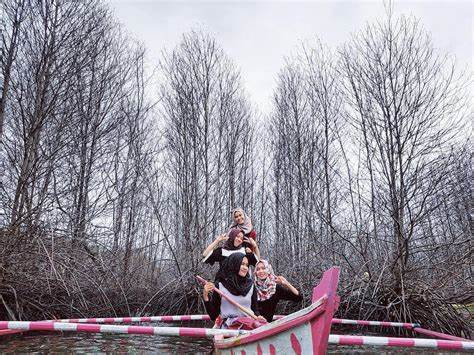
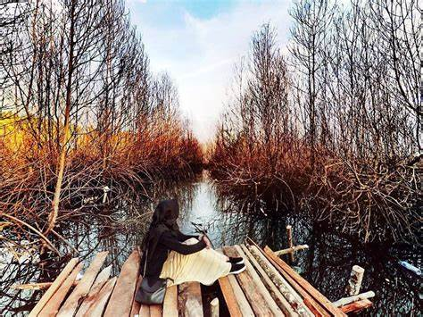
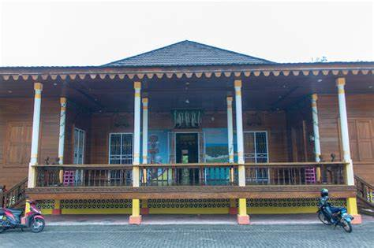

PANTAI PARIAMAN
PANTAI PARIAMAN


PESONA ALAM DISEKITAR

Pulau Kasiak
Pulau Kasiak merupakan salah satu pulau yang terletak di sisi barat pulau Sumatra. Secara administrasi pemerintahan, pulau ini masuk ke dalam wilayah Kecamatan Pariaman Utara, Kota Pariaman, Provinsi Sumatra Barat, Indonesia. Kata Kasiak yang disematkan pada pulau ini berasal dari bahasa Minang yang berarti pasir. Secara topografi pulau ini relatif datar dengan pantai berpasir putih. Pulai ini ditumbuhi beberapa pohon mulai dari pohon kelapa, waru laut, hingga pohon bakau. Selain itu juga ditumbuhi semak belukar dan beberapa tubuhan bunga. Pulau ini merupakan salah satu pulau yang tercatat tak berpenduduk. Meski begitu, di dalam pulau terdapat satu mercusuar dan bangunan milik Departemen Perhubungan. Pada pulau ini juga terdapat bangunan penahan gelombang untuk menahan laju abrasi.
Pantai Gandoriah
Pantai Gandoriah adalah sebuah pantai di Pariaman yang memiliki pemandangan yang luar biasa indah, konturnya yang landai, serta gugusan pulau-pulau kecil menjadi penyempurna keindahan Gandoriah. Pantai ini menjadi gerbang awal untuk masuk ke pantai lainnya yang tak kalah cantik dari pantai Gandoriah, dan pantai-pantai tersebut dikenal dengan 6 gugusan pantai Gandoriah. Rute menuju Pantai Gandoriah sangatlah mudah, para wisatawan bisa naik kereta api yang menuju Stasiun Pariaman. Dan tepat di depan Stasiun Pariaman langsung berada di depan gerabng masuk Pantai Gandoriah. Jika melalui kota Pariaman, para traveler tidak akan sulit menuju lokasi. Karena lokasi dari pusat Kota Pariaman hanya berjarak 100 meter. Banyak sekali angkutan umum yang akan membawa wisatawan ke lokasi objek wisata.
Muara Manggung
Untuk para pencari wisata Pariaman yang hobi dengan fotografi, objek wisata ini menjadi salah satu pilihan yang tepat untuk dikunjungi. Di Muara Panggung banyak sekali disediakan spot foto instagramable yang sudah dirancang oleh pengelola tempat wisata. Pemandangan rawa yang disajikannya pun tampak sangat terawat. Hal itu dapat dilihat dari lingkungan sekitar yang bersih dan cukup asri. Kalian juga bisa menyusuri daerah di sekitar rawa dengan menyewa perahu. Objek wisata ini tidak dikenakan biaya tiket masuk. Kalian yang ingin datang bisa langsung menuju ke Manggung, Kecamatan Pariaman Utara, Pariaman, Sumatera Barat.
 Perlu dicatat, Rumah Tabuik
Pasa, berada di Jalan Syech Burhanudin dan Jalan Imam Bonjol, Kota Pariaman.
Dibanding bangunan lain, Rumah Tabuik Pasa akan terlihat lebih menonjol. Sedikit
gambaran, rumah adat ini berbentuk panggung nan megah. Lengkap dengan beragam
ornamen warisan leluhur masyarakat Pariaman.
Perlu dicatat, Rumah Tabuik
Pasa, berada di Jalan Syech Burhanudin dan Jalan Imam Bonjol, Kota Pariaman.
Dibanding bangunan lain, Rumah Tabuik Pasa akan terlihat lebih menonjol. Sedikit
gambaran, rumah adat ini berbentuk panggung nan megah. Lengkap dengan beragam
ornamen warisan leluhur masyarakat Pariaman.
Rumah Tabuik Pasa Pariaman
Ada yang tidak boleh dilupakan jika hendak berwisata ke Kota Pariaman, Sumatra Barat. Yakni memasukan Rumah Tabuik Pasa. Di rumah adat khas Pariaman tersebut, Anda akan disuguhi beragam tradisi dan budaya dari kota berjuluk The Sunset City of Indonesia. Dan itu berbeda dengan rumah adat Minangkabau pada umumnya.Perlu dicatat, Rumah Tabuik
Pasa, berada di Jalan Syech Burhanudin dan Jalan Imam Bonjol, Kota Pariaman.
Dibanding bangunan lain, Rumah Tabuik Pasa akan terlihat lebih menonjol. Sedikit
gambaran, rumah adat ini berbentuk panggung nan megah. Lengkap dengan beragam
ornamen warisan leluhur masyarakat Pariaman.